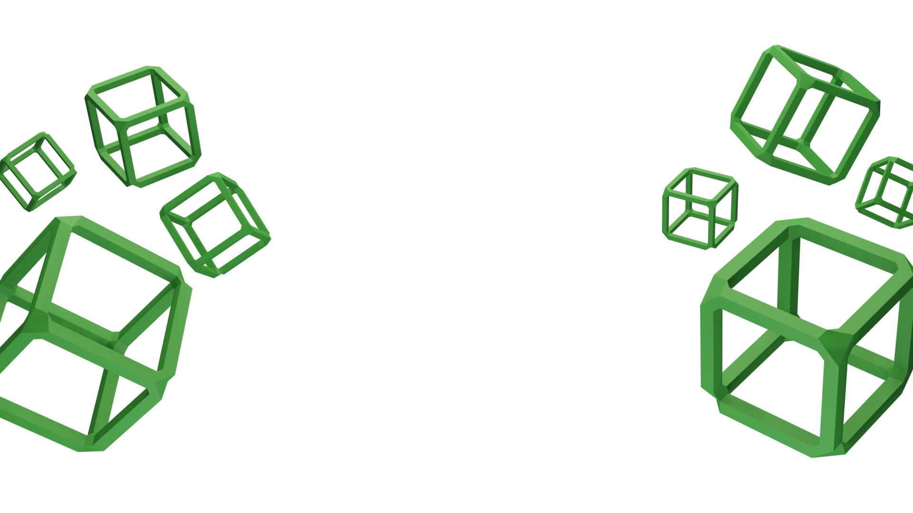
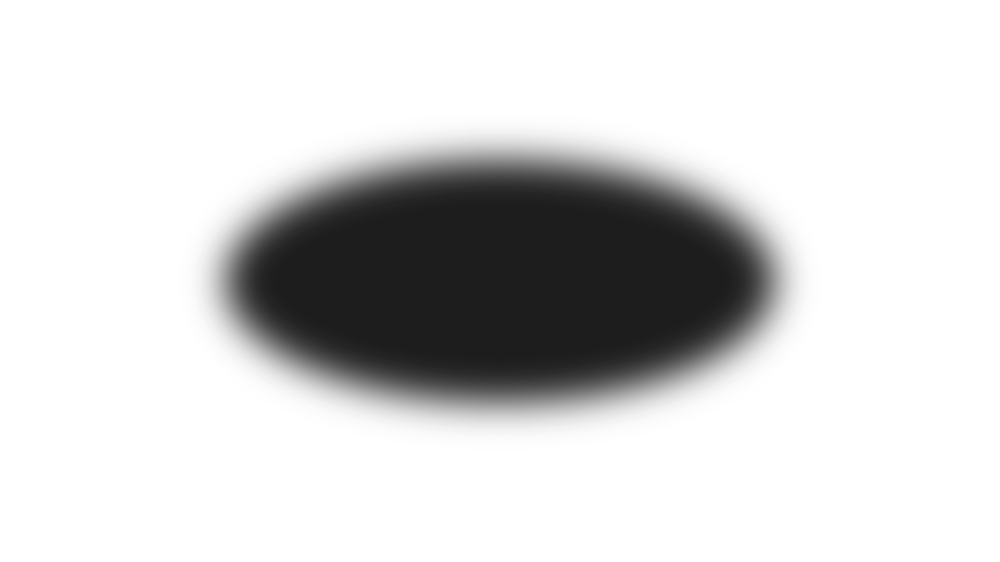

Hi, I'm Rei Punzalan
3D ARTIST
A passionate 3D modeller specialized in making hand-painted low-poly game assets that are ready to import on any game engine.
WORKS
ABOUT
Amado Niño Rei Punzalan, aka. Rei is a 3D artist who specialized in low-poly modelling and hand-painted textruring with more than a year of experience. He is profiecient in using Blender 3D, Photoshop, Paint.NET, and more. He is eager to learn more about digital art and the professional world in order to obtain essential experience.